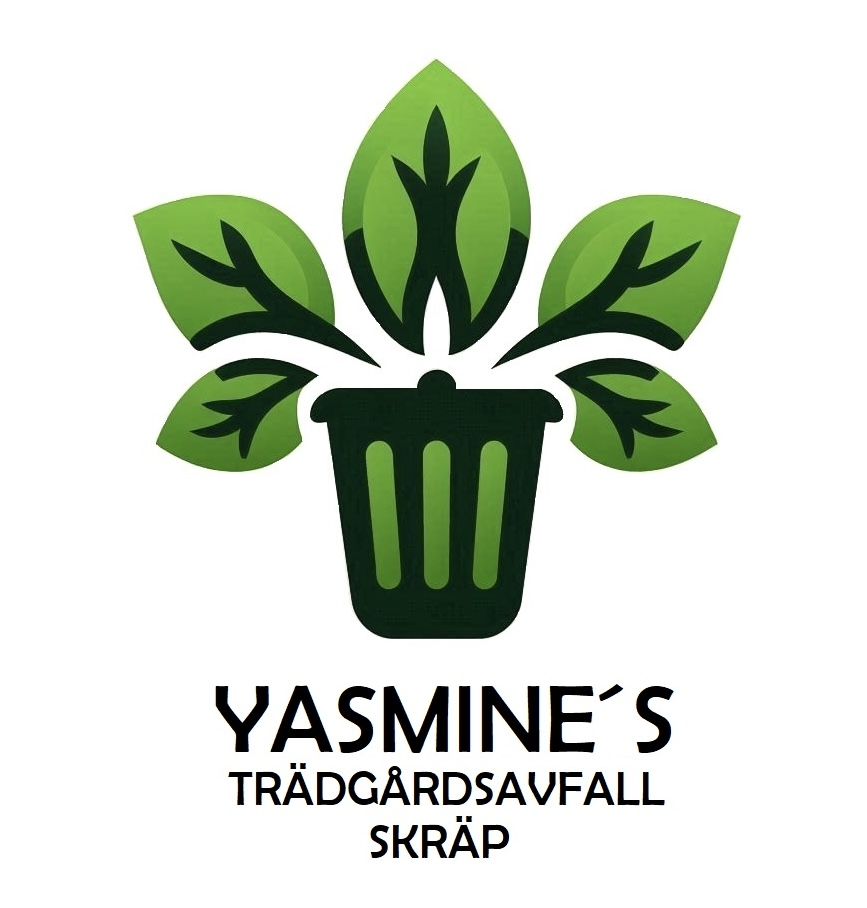
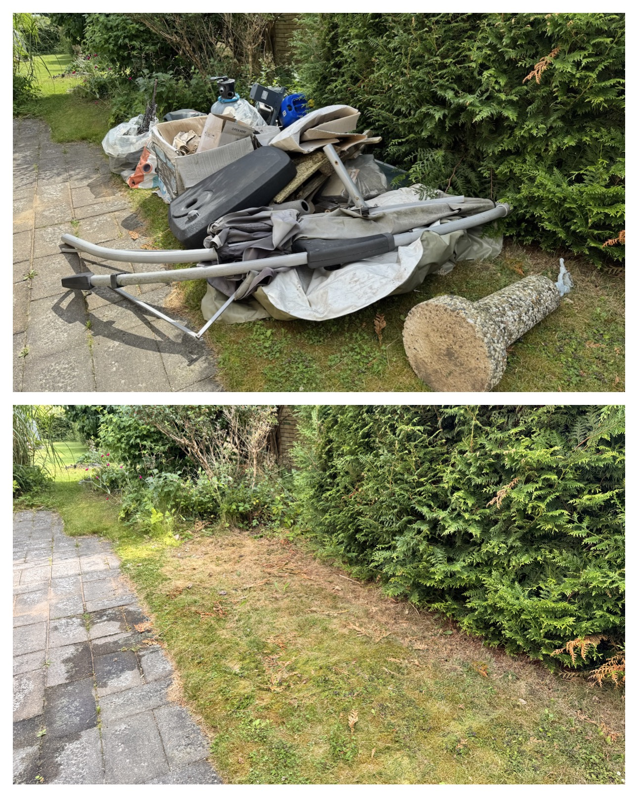
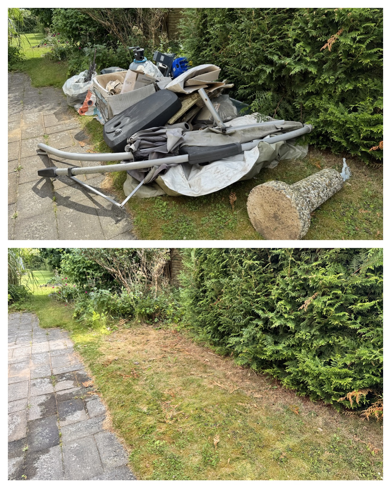

Yasmine’s Trädgårdsavfall och Skräp
Snabb offert • Smidig hämtning
Snabb offert • Smidig hämtning
Bortforsling av trädgårdsavfall & skräp
Vi hjälper privatpersoner och företag med bortforsling,
förrådstömning, möbler, grovsopor och dödsbo-rensning.
Vi utgår från Helsingborg och tar även närliggande kommuner och hela nordvästra Skåne.
Våra tjänster
🌿 Trädgårdsavfall – ris, löv, grenar
🪑 Möbler & grovsopor
📦 Förrådstömning
🏡 Dödsbo-rensning
Före & Efter

 


Kontakt
Snabbast är SMS med en bild. Du kan även ringa eller mejla direkt.